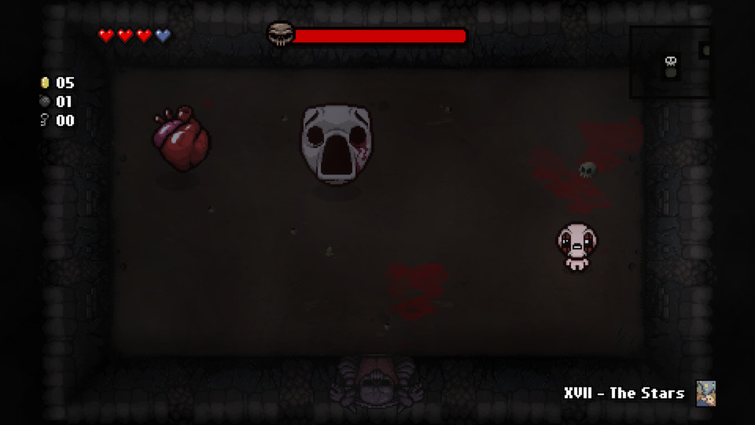
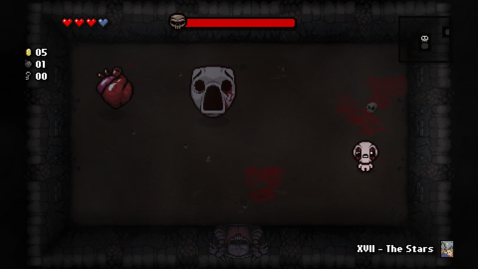

The binding of Isaac: Rebirth
The Binding of Isaac: Rebirth is a randomly generated action RPG shooter with heavy Rogue-like elements. Following Isaac on his journey players will find bizarre treasures that change Isaac’s form giving him super human abilities and enabling him to fight off droves of mysterious creatures, discover secrets and more.
- Rogue-like
- Indie
- Booty-cheeks
Reviews
Edmund McMillen. You little fucker. You made a shit of piece with your trash Isaac. It’s fucking bad this trash game. I will become back my money. I hope you will in your next time a cow; on a trash farm, you sucker. 10/10
-Guy on twitter
Very fun, but sometimes a little frustrating, it has a little something for everyone! 8.7/10
-ign
Couldnt get past the tutorial, this game is trash and not new player inclusive. Aside from that the graphics really really suck, play a good game like knack 2 instead 0.0/10
-Kotaku
 
